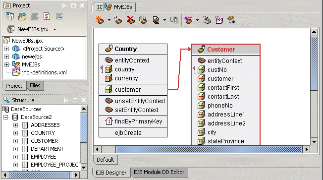

This is a feature of JBuilder Enterprise.
The EJB designer is a true Two-Way ToolTM that allows you to design your EJB 2.0 and 1.1 components visually as JBuilder generates the code from your design. You can make changes to your design either through the EJB designer, or by editing the generated source code directly. Your source code and your design remain synchronized. As you work with the EJB designer, your deployment descriptors are being created for you, preparing your bean for deployment to your selected application server. You can edit those deployment descriptors using the EJB Module DD editor. When you are done developing your enterprise beans, JBuilder has wizards and tools to help you deploy them to your target server.

For more information, see:
Developing Applications with Enterprise JavaBeans: An introduction to EJB development
Developing Applications with Enterprise JavaBeans: Creating session beans with the EJB designer
Developing Applications with Enterprise JavaBeans: Creating entity beans with the EJB designer
Developing Applications with Enterprise JavaBeans: Editing EJB deployment descriptors